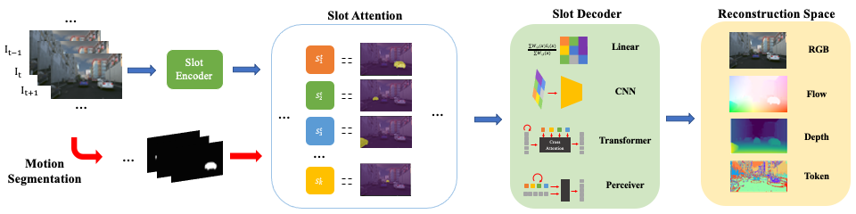
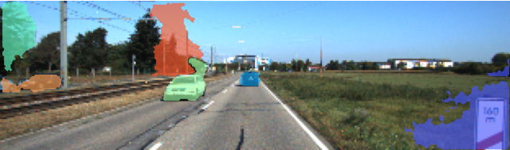
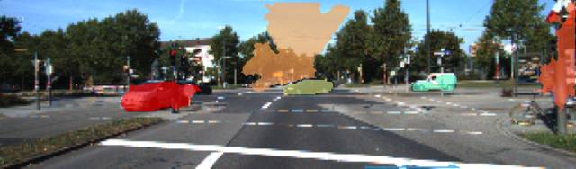
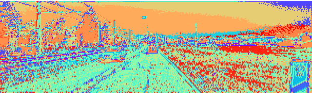
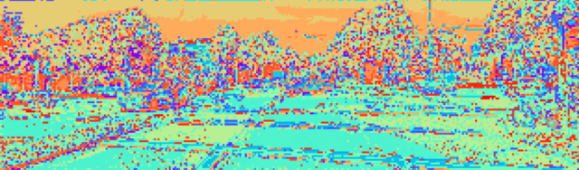

Abstract
Object discovery -- separating objects from the background without manual labels -- is a fundamental open challenge in computer vision. Previous methods struggle to go beyond clustering of low-level cues, whether handcrafted (e.g., color, texture) or learned (e.g., from auto-encoders). In this work, we augment the auto-encoder representation learning framework with two key components: motion-guidance and mid-level feature tokenization. Although both have been separately investigated, we introduce a new transformer decoder showing that their benefits can compound thanks to motion-guided vector quantization. We show that our architecture effectively leverages the synergy between motion and tokenization, improving upon the state of the art on both synthetic and real datasets. Our approach enables the emergence of interpretable object-specific mid-level features, demonstrating the benefits of motion-guidance (no labeling) and quantization (interpretability, memory efficiency).Visualizations
TRI-PD Slots+Tokens:


KITTI Slots+Tokens:




Dataset


TRI-PD dataset is generated by the Parallel Domain platform. It contains RGB, bounding box, instance segmentation, optical flow, depth, camera calibrations, semantic segmentations, etc. Besides these annottaions, we have also rendered the moving objects and dynamic objects ground-truth for this dataset.
Download link: Simplified Dataset. See our Repo for details.